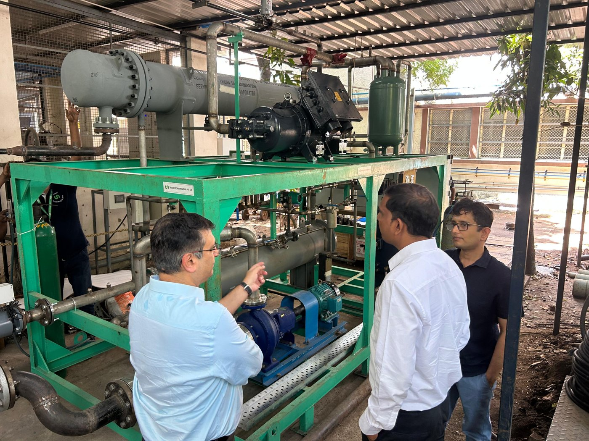

IIT Madras · Energy & Emissions Research Group
Impact
The measure of translational research is what runs in the field — a record of firsts, deployments, and quantified outcomes.
50+ / 200+sites / heat pump units (TRL 9)
~100,000 tCO₂ reduced via KISEM
255firms audited · 30 sectors
₹180 Crsavings identified (₹60+ Cr realised)
80 MTCO₂e/yr Wankel potential
−35 °Clowest deployment ambient

IEAC student energy auditors in the field

Industrial heat pump at a deployment site
Case snapshots
- First in India: the 120 °C industrial heat pump
- Emission intensity below 45% of baseline; now a TRL-9 product at 50+ sites and 200+ units, commercialised through TrigenDC.
- Heat for the high Himalaya
- Very-low-ambient heat pumps in Leh/Ladakh and Sikkim down to −35 °C for ITBP and PWD — ~70% CO₂ reduction versus diesel.
- The Wankel steam expander
- Patented dynamic admission control recovers power from steam pressure reduction — an estimated 20 GW opportunity across Indian industry.
- KISEM: energy efficiency at MSME scale
- 255 firms, 30 sectors, 2,650+ recommendations; ₹180 Cr identified, ₹60+ Cr realised; backed by ₹20 Cr + ₹21 Cr Kotak CSR.
- The Energy Consortium
- 52 faculty, 12 industry members; India's first mobile CO₂-capture demonstrator; COP28.
- Nirmaan pre-incubation
- Seeded 20+ student startups (Tan90, Modulus Housing) collectively valued at ~₹1,000 crore.
Testimonials
From ~50 industry appreciation letters received by the KISEM audit network.
Loading testimonials…